{kind=link}
Encode partial observations
The model reads observed free, blocked, and unknown cells in a bird's-eye-view grid. Cells outside the valid support domain remain blocked throughout training and prediction.
Clean validation candidate, not a final paper result: 4,224 events per seed, K=128 posterior worlds, identical query keys, and a locked physical test split. Open full resolution ↗ · Open provenance, metrics, and checkpoint hashes ↗
Results updated . The figure's 0.8-threshold comparison uses coverage 33.6% for ConPath and 36.6% for the independent control. At equal 30% coverage, all three paired risk intervals include zero: a stable safety improvement is not established. Read the new controlled analysis ↗
MODEL COMPARISON · FLATLANDS VALIDATION · TEST LOCKED
Event-level calibration of footprint-conditioned connectivity under partial observation
Occupancy marginals do not answer the question a robot asks at planning time: is there a support-valid path from a start to a goal for my footprint? ConPath treats that question as a calibrated event. A stochastic posterior produces spatially coherent support-map hypotheses, and a footprint-aware connectivity operator evaluates the event on each hypothesis rather than multiplying independent cell probabilities. The primary visual now exposes that model-level comparison on a frozen, scene-disjoint FlatLands validation protocol; a separate TUM RGB-D sequence keeps the RGB-D → world-geometry hand-off inspectable.
An audit found that invalid cells outside the epistemic support were not hard-blocked in an earlier forward. The old checkpoints and their post-hoc correction are retained as an audit trail; the primary visual now uses the independently audited clean-support rerun. No FlatLands test labels have been opened, and the non-official provenance split still limits the claim to validation.
From a partial bird's-eye-view observation to the probability that a vehicle-sized path exists.

s reaches goal g for radius r. The real-data adapter supplies geometry; ConPath's research object is the event posterior q(s, g, r | X).The model reads observed free, blocked, and unknown cells in a bird's-eye-view grid. Cells outside the valid support domain remain blocked throughout training and prediction.
A learned mean map, global latent factors, and locally correlated noise produce complete map hypotheses. The independent control uses the same encoder, parameter budget, observations, and queries.
Each sampled world is eroded by a disk footprint and queried with four-neighbour connectivity. Brier, NLL, ECE, and false-safe rate attach calibration to the planning event.
A transparent RGB-D geometry hand-off retained as a pipeline appendix, separate from the trained-model comparison above.
Geometry pilot only: RGB observation → registered depth → world-frame raster. The black trajectory is the official motion-capture pose; no robot traversability label is claimed.


Future-frame event audit on the measured reference raster. Lower is better.
| Method | Brier ↓ | NLL ↓ | ECE ↓ | False-safe @ 0.8 ↓ |
|---|---|---|---|---|
| Loading tracked real-data snapshot… | ||||
MEASURED PILOT
The snapshot is loaded from site/data/tum_rgbd_pilot.json.


Data source: TUM RGB-D, TU Munich ↗. Derived assets and exact commands are versioned with the ConPath repository ↗.
DATA AUDIT · NON-OFFICIAL PROVENANCE SPLIT · NOT A MODEL RESULT
A target-blind, scene-disjoint query audit that freezes the next model-evaluation protocol without treating data statistics as algorithm performance.
provenance.original_split, which is scene-disjoint; the archive directory is used solely to locate bytes inside the ZIP.

| Provenance stratum | Retained | Reachable r=0 | Reachable r=10 | Reachable r=20 | Scene failure rate | Gate |
|---|---|---|---|---|---|---|
| Loading tracked FlatLands audit snapshot… | ||||||
| Split pair | Official archive split | Provenance split used |
|---|---|---|
| Loading overlap audit… | ||
P1 DATA GATE
This section reports dataset suitability only. Model baselines and ConPath results will appear after the fixed evaluator is complete.
Download compact audit JSON ↗VALIDATION BASELINES · SUPPORT-BOUNDED · TEST LOCKED
Same FlatLands validation provenance split and radii (0/10/20 cells) for every row. These fixed baselines already constrain completion worlds to the released epistemic support.
unknown & epistemic_mask; the radius prior and direct-query model never create a path map. These remain validation diagnostics, and the physical test split stays locked.| Method | Brier ↓ | NLL ↓ | ECE ↓ | False-safe @ 0.8 ↓ | Coverage @ 0.8 |
|---|---|---|---|---|---|
| Loading tracked validation baseline snapshot… | |||||
FIXED BASELINE SNAPSHOT
The fixed baseline worlds are support-bounded; this remains a validation-only comparison rather than a final test claim.
Download baseline JSON ↗

| Method | r = 0 Brier ↓ | r = 10 Brier ↓ | r = 20 Brier ↓ | r = 20 false-safe ↓ |
|---|---|---|---|---|
| Loading radius-stratified baseline snapshot… | ||||
| Method |
|---|
| Loading source-stratified baseline snapshot… |
Clean-support checkpoint comparison. This replacement figure uses real K=128 ConPath and matched independent checkpoints trained with the corrected support contract, and exposes all three seed probabilities. Case A is the highest mean Brier-gain reachable event among cases where ConPath improves in every seed; Case B is the highest-gain unreachable event where the independent model crosses the 0.8 false-safe threshold in every seed and ConPath does not. Because selection uses validation labels, the cases explain the aggregate result but do not estimate its effect size.
RECENT METHODS · CONTRACT CHECKED
We are adding recent uncertainty/completion methods without mixing incompatible 3-D occupancy scores into this 2-D event task. The bounded manifest retains 4,653 valid endpoints overall; the current validation slice has 4,224 rows, radii 0/10/20, three seeds, and a capacity-matched ConPath encoder (F=16, 120,108 parameters). Cross-task numbers remain references only.
| Method | Year | Relation | Status |
|---|---|---|---|
| PaSCo | 2024 | uncertainty-aware completion | same-contract 3-subnet control evaluated (validation-only) |
| SGN-L | 2024 | 12.5M compact SSC reference | reference-only (3-D/camera) |
| S4C | 2024 | implicit field completion | same-contract coordinate-query control evaluated (validation-only; not an S4C reproduction) |
| SceneSense | 2024 | diffusion occupancy | reference-only (3-D pointmap/ROS contract) |
| ORFD | 2022 | ground-vehicle off-road freespace | candidate second domain; image-plane semantics audited, adapter pending |
| UnScenes3D | 2025 | 3-D occupancy/elevation + local map | clean support-consistent validation diagnostic; no measurable correlation gain on two scenes |
| FlatLands | 2026 | same-task stochastic completion | official check: weights/code planned; reference-only |
Full parameter table, fairness rules, and incompatibility notes: RECENT_BASELINES.md ↗


Protocol: P1_BASELINE_PROTOCOL.md ↗. Checkpoints, manifests, and exact reports remain in the reproducibility workspace; no test result is published here.
CLEAN CHECKPOINTS · SAME QUERIES · VALIDATION ONLY
Spatial dependence changes event accuracy, while the strongest deterministic control and equal-coverage risk qualify the result.
| Method | Seeds | Brier ↓ | False-safe at 30% coverage ↓ |
|---|---|---|---|
| ConPath K=128 | 3 | 0.06749 ± 0.00936 | 0.03600 ± 0.00986 |
| Independent K=128 | 3 | 0.09521 ± 0.00703 | 0.03901 ± 0.00748 |
| Deterministic completion | 3 | 0.08857 ± 0.00323 | 0.07293 ± 0.00682 |
| Coordinate-query control | 3 | 0.09204 ± 0.00582 | 0.06965 ± 0.00871 |
| Direct query (one seed) | 1 | 0.09119 | 0.05023 |
| Train-fitted radius prior | 1 | 0.15870 | 0.11156 |
| ConPath mean-map K=128 | 3 | 0.06957 ± 0.00380 | 0.10509 ± 0.01468 |
| Independent mean-map K=128 | 3 | 0.07184 ± 0.00349 | 0.11023 ± 0.01558 |
| ConPath shuffled worlds (same marginals) | 3 | 0.16139 ± 0.00677 | 0.03908 ± 0.01622 |
Coverage gives equal weight to scenes. Boundary ties receive label-independent fractional acceptance, including binary predictors. At equal 30% coverage, every ConPath-versus-independent risk interval includes zero. Direct query has one training seed; the radius prior is one train-fitted control. These are exploratory validation comparisons.
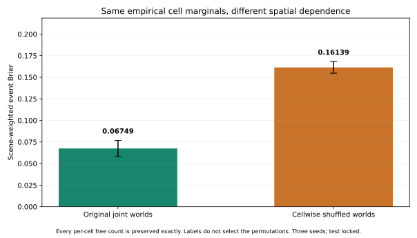
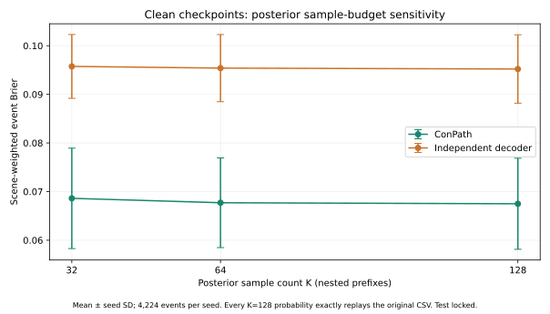
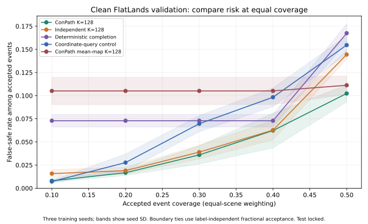
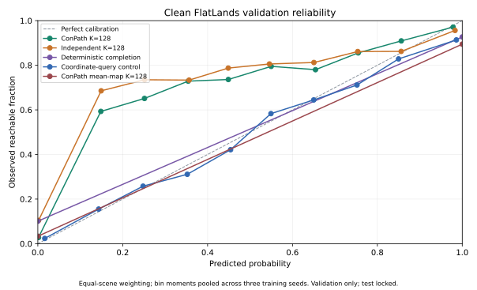
SECOND DOMAIN · CLEAN SUPPORT VALIDATION · LOCATION_6 LOCKED
A coordinate-audited LiDAR/occupancy adapter with a fixed ground-endpoint policy, site-held-out validation, and explicit architectural controls.
location_6 remains unopened and its test labels remain locked.| Decoder | Brier ↓ | NLL ↓ | ECE ↓ | False-safe @ 0.8 ↓ | Coverage @ 0.8 |
|---|---|---|---|---|---|
| Correlated ConPath (clean) | 0.51142 ± 0.00198 | 9.00654 ± 0.01659 | 0.65191 ± 0.00120 | 0.20388 ± 0.00443 | 0.21634 ± 0.00120 |
| Independent decoder (clean) | 0.51130 ± 0.00218 | 9.00553 ± 0.01832 | 0.65184 ± 0.00133 | 0.20361 ± 0.00490 | 0.21626 ± 0.00133 |
TRANSFER DIAGNOSTIC
The clean map-derived outputs are reproducible and support-consistent, but the paired effect is near zero and the sample has only two held-out scenes. Do not rank this adapter against the FlatLands result or treat it as a final cross-domain claim.
paper_result=false, test_evaluated=false, and location_6 locked.Clean-support ground-robot panels. These real UnScenes3D panels use the correlated clean checkpoint and show the camera/LiDAR projection, observed BEV, posterior mean, and footprint-conditioned reachability. The second panel is deliberately a false-safe validation failure: the visual makes the remaining calibration limitation visible instead of implying a win.
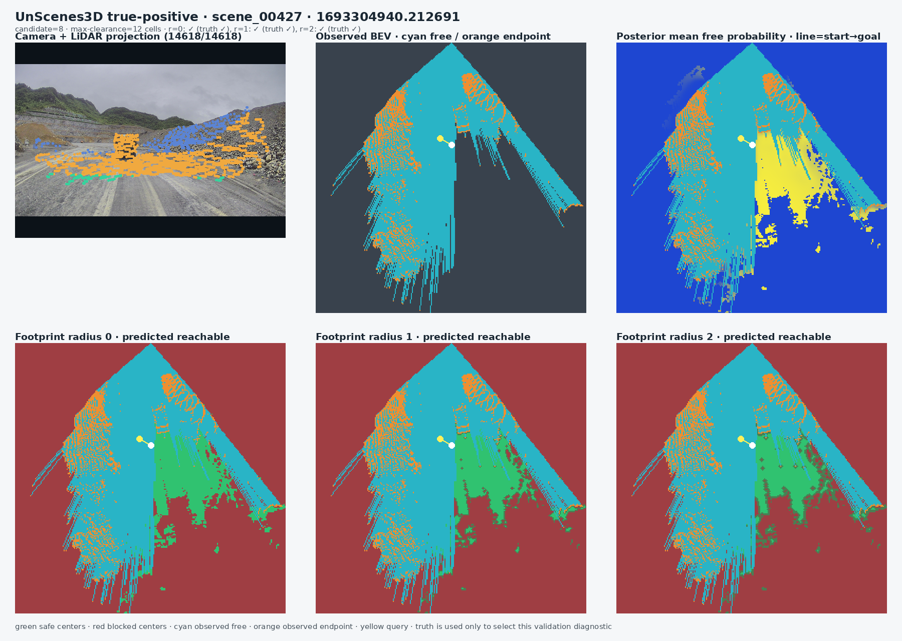
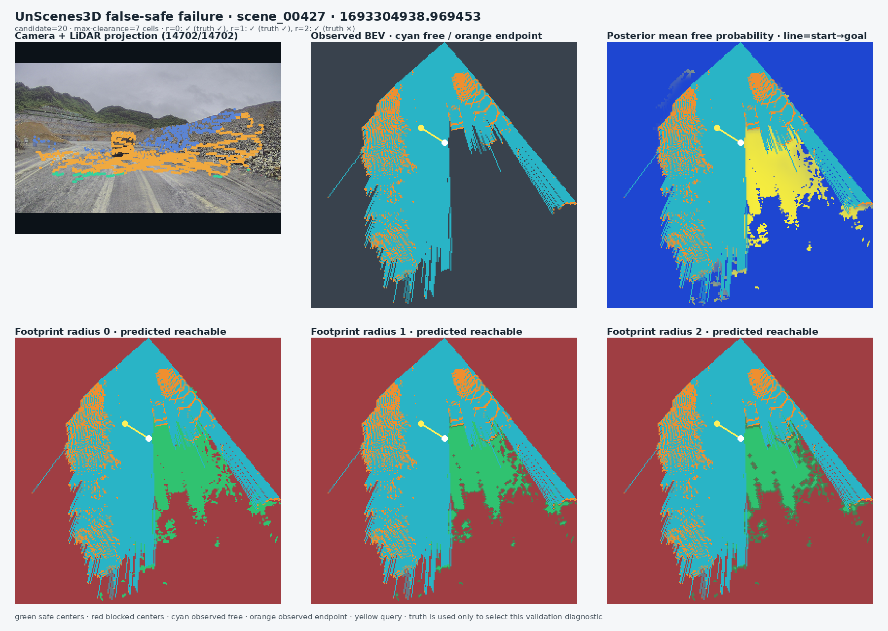
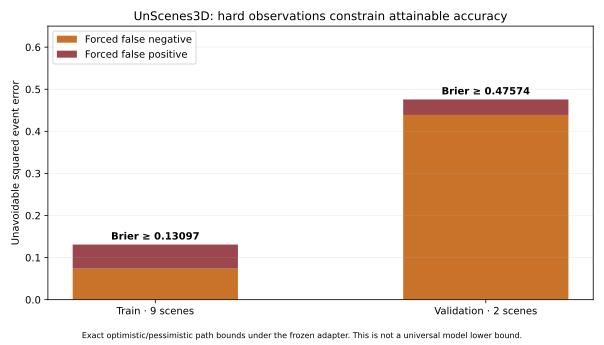
| Control | Brier | NLL | ECE | False-safe @ 0.8 |
|---|---|---|---|---|
| Correlated ConPath (pre-correction; superseded) | 0.56272 ± 0.00744 | 9.06574 ± 0.04398 | 0.67082 ± 0.00739 | 0.27450 ± 0.01330 |
| Independent decoder (pre-correction; superseded) | 0.56297 ± 0.00541 | 9.08667 ± 0.04961 | 0.67240 ± 0.00525 | 0.27027 ± 0.01767 |
| S4C-inspired coordinate query | 0.20379 ± 0.03485 | 0.57289 ± 0.10572 | 0.11107 ± 0.05312 | 0.13342 ± 0.01875 |
| Posterior mean-map (pre-correction; superseded) | 0.62774 ± 0.00145 | 9.96833 ± 0.01217 | 0.72153 ± 0.00088 | 0.39940 ± 0.00182 |
| Train-fitted radius prior | 0.23268 | 0.52509 | 0.03237 | 0.19359 |
ARCHIVE ONLY
The direct coordinate-query and radius-prior controls remain useful. Historical map-derived numbers and panels are retained only to document the support-boundary correction; the clean candidate above is the current validation artifact.
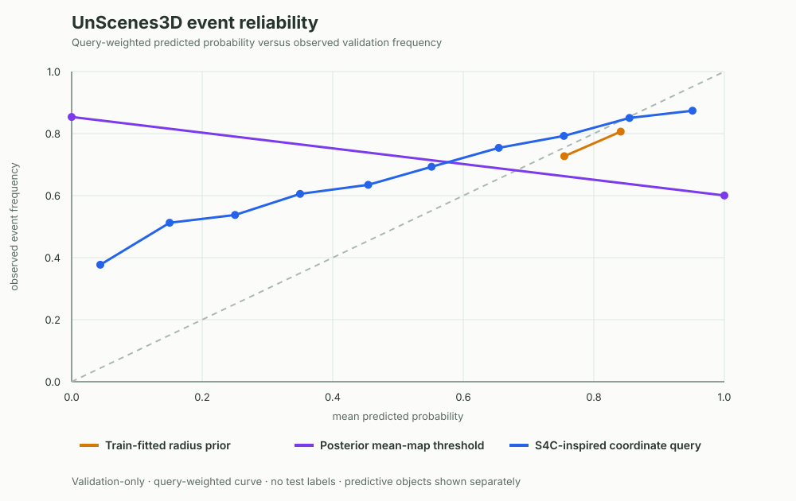
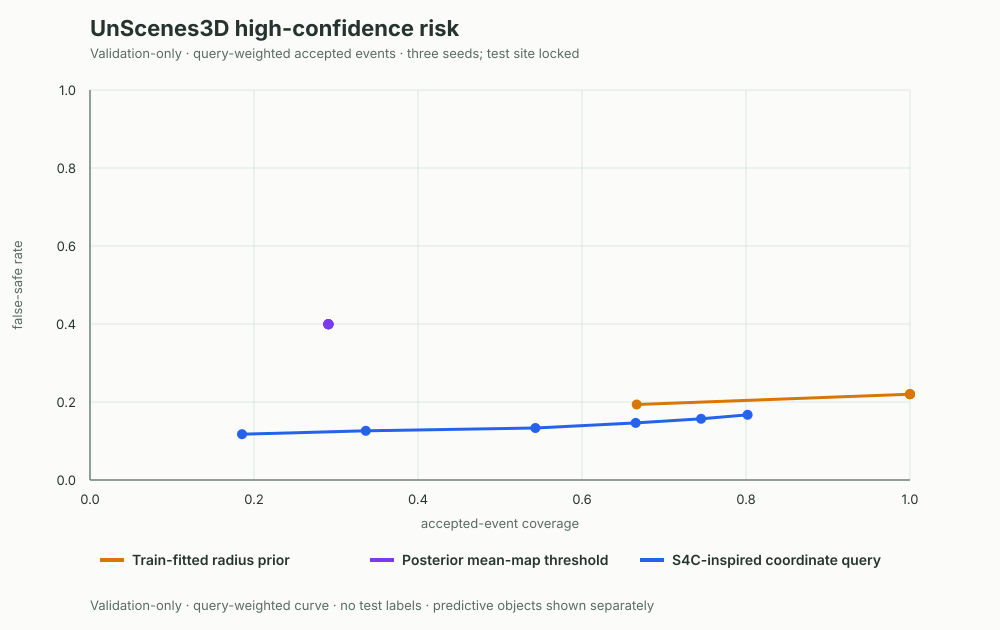
Archived pre-correction qualitative diagnostic. These panels remain useful for inspecting the camera/LiDAR/BEV pipeline, but their posterior maps did not clamp the invalid support complement and therefore do not constitute current model evidence.
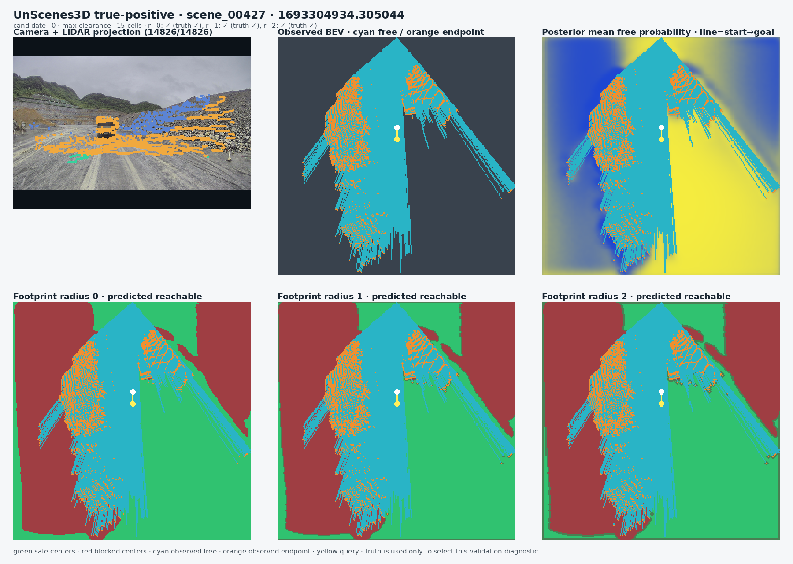
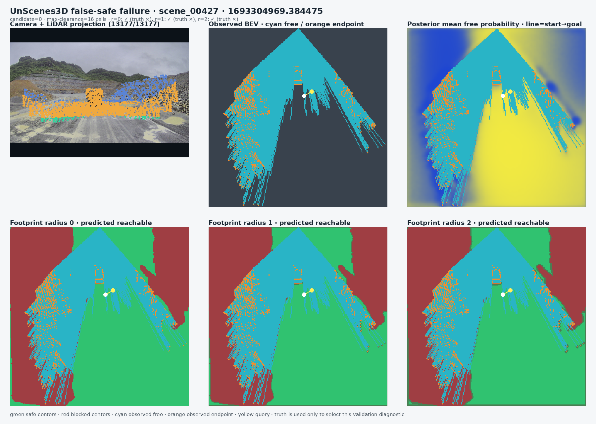
Protocol and coordinate audit: UNSCENES3D_PROTOCOL.md ↗ · compatibility note ↗. Clean checkpoint reports and candidate panels are validation-only; the manifest/coordinate audits remain valid because they do not sample posterior maps. Clean paired report ↗ · Clean qualitative report ↗ · Manifest replay audit ↗ · archived GPU replay ↗. No test artifact is published.
/usr/bin/python3 scripts/run_tum_rgbd_pilot.py \
--publish-siteRaw data stays in the ignored data/raw/ directory. The command writes the report, CSV, figures, and the compact real-data video used on this page.
This pilot has no human or robot collision labels. Its connectivity labels are defined on a fused geometric reference map. It is evidence that the real-data path runs end to end, not evidence that ConPath is already ready for ICRA/IROS.
Read the full protocol ↗@misc{conpath2026,
title = {ConPath: Connectivity-Calibrated Path Reliability},
author = {ConPath contributors},
year = {2026},
note = {Research prototype and real-data pilot}
}
@inproceedings{sturm2012rgbd,
title = {A Benchmark for the Evaluation of RGB-D SLAM Systems},
author = {Sturm, J. and Engelhard, N. and Endres, F. and Burgard, W. and Cremers, D.},
booktitle = {IEEE/RSJ IROS},
year = {2012}
}{kind=link}
{kind=link}